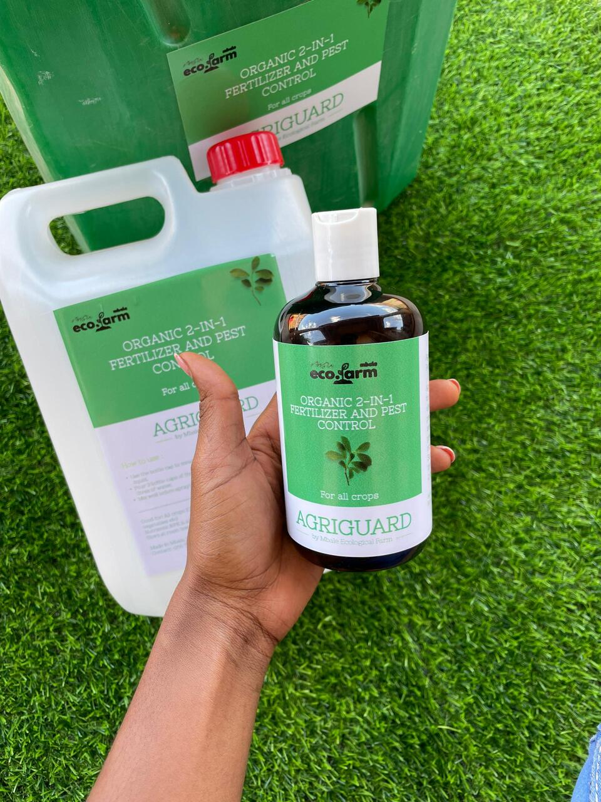
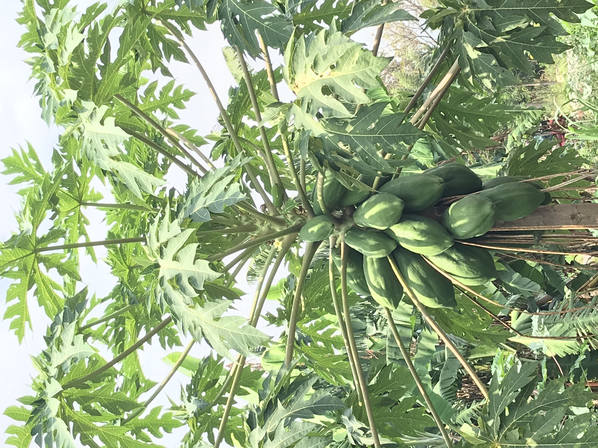
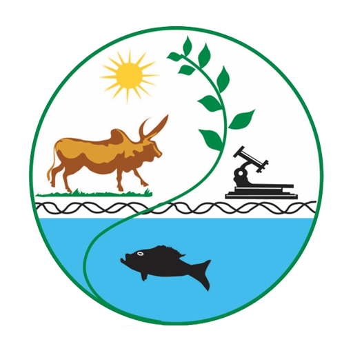
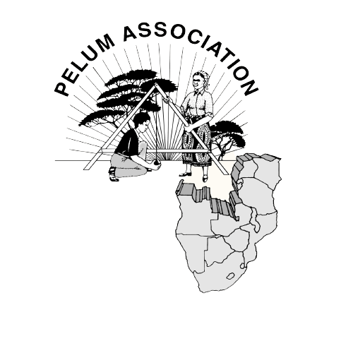

How We Help You

Premium Organic Products
We produce two kinds of fertilizers: solid and liquid. Each type has its own advantages, depending on factors like farm conditions and specific needs. Sometimes, using both types together can offer the best results. Plus, it's pocket friendly.
Learn more about products

Expert Consultation
Get personalized advice on starting or expanding your organic farm, including profitable crop selection.
Shop Now
Ongoing Support
We offer continuous guidance on product application and organic farming practices.
Shop NowCompanies we've worked with

